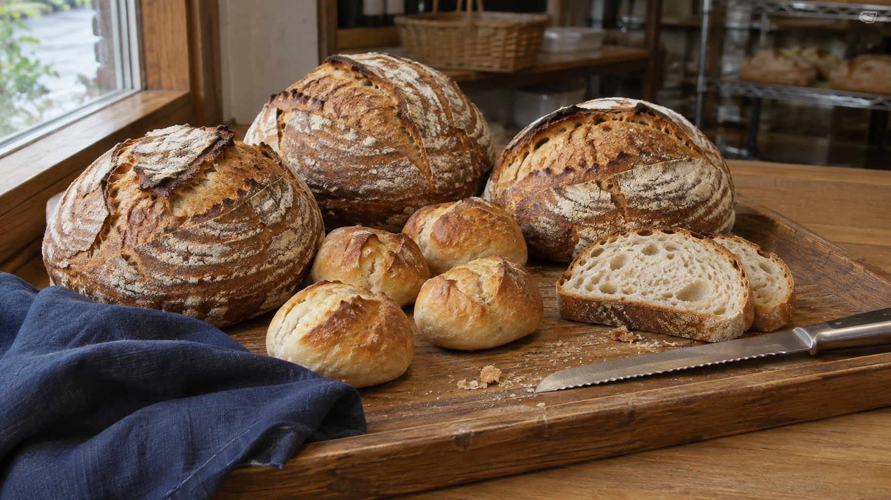

毎日のパン 焼き上がり 10:00ごろ
山の食パン
薄く切って、まずはそのまま。翌日は少し濃いめにトーストを。
アレルゲン：小麦・乳
420円 / 1斤
NEIGHBORHOOD BAKERY
カンパーニュは11時、
甘いパンは12時ごろに。

りんごのブリオッシュを焼いています。12時ごろから。
前日の15時までにご相談ください。当日分の追加は店頭で。
いつものパン
食事パンは4種類、甘いパンは2種類。
6種類がそろうのは12時ごろです。
毎日のパン 焼き上がり 10:00ごろ
薄く切って、まずはそのまま。翌日は少し濃いめにトーストを。
アレルゲン：小麦・乳
420円 / 1斤
毎日のパン 焼き上がり 11:00ごろ
全粒粉を混ぜた、酸味ひかえめの食事パン。厚めに切ってスープとどうぞ。
アレルゲン：小麦
780円 / 1個
毎日のパン 焼き上がり 10:00ごろ
底はかりっと、中はやわらかく。朝ごはんにも、おやつにも。
アレルゲン：小麦・乳
190円 / 1個
食パンのスライスと持ち帰り。
食パンは4・5・6・8枚切りにできます。焼きたての時間は、冷めてからのお渡しです。持ち帰りのみの小さな店なので、パンを入れる袋もご持参いただけます。
お店と買い方のこと